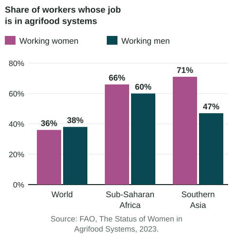

Women in Agriculture
Women's farm labor covers every stage of the food system and differs by place and type of production.
Part 1 · Hook
Why this matters
Part 2 · Before you start
What this builds on
Part 3 · Prerequisite check
Quick check before you start
1. A man moves from a village to a city in his own country for work. What kind of migration is this?
- Internal migration
- International migration
- Forced migration
- Chain migration abroad
Show the answer
Moving within one country is internal migration.
- Correct: Internal migration:
- International migration:
- Forced migration:
- Chain migration abroad:
2. Which describes subsistence agriculture?
- Farming mainly to feed the farmer's family
- Farming mainly to sell for profit
- Growing one crop on a field year after year
- Raising animals on a fenced ranch
Show the answer
Subsistence farming feeds the household.
- Correct: Farming mainly to feed the farmer's family:
- Farming mainly to sell for profit:
- Growing one crop on a field year after year:
- Raising animals on a fenced ranch:
Part 4 · See it
See it first

Part 5 · Step by step
How it works, step by step
- Many men in rural Nepal migrate to cities or abroad for workfewer men remain to farm
- Fewer men remain to farmwomen take on more farm work and decisions
- Women often have less secure land rights and access to creditthey may have trouble investing in the farms they now run
Part 6 · Key ideas
Key ideas
- Women's farm labor spans production, processing, distribution and consumption, and it varies by place, culture, laws and type of farming.
- FAO (2023): 36% of working women and 38% of working men worldwide are in agrifood work; in Southern Asia, 71% of women and 47% of men.
- Gaps in wages, land rights and access to credit and inputs, not ability, explain why farms run by women produce less on the same land. Closing them could cut food insecurity.
Part 7 · Misconception
A common mistake
The wrong idea: Women produce less on their farms because they are less able farmers.
What actually happens: FAO links the gap to unequal access to land, credit, seeds, fertilizer, training and markets. With equal access, the gap shrinks.
Part 8 · Check yourself
Check yourself
Exam-style questions. Anything you miss goes into your review queue.
Data
Women and men working in agrifood systems
Source: FAO, The Status of Women in Agrifood Systems, 2023.
1. In which region does the chart show the largest gap between the shares of women and men working in agrifood systems?
- Southern Asia
- The world as a whole
- Sub-Saharan Africa
- The gap is equal in the three groups
Show the answer
Compare the pairs of bars: Southern Asia has by far the largest difference.
- Correct: Southern Asia: Right: 71% of working women and 47% of working men, a gap of 24 percentage points.
- The world as a whole: The world shares are close: 36% and 38%.
- Sub-Saharan Africa: The gap there is 6 points: 66% and 60%.
- The gap is equal in the three groups: The gaps are 2, 6 and 24 points.
2. Which statement compares the world figures with Sub-Saharan Africa's?
- Women rely less on agrifood work in Sub-Saharan Africa than in the world as a whole
- Men in Sub-Saharan Africa rely less on agrifood work than men worldwide
- Women and men both rely more on it in Sub-Saharan Africa
- The figures for Sub-Saharan Africa match the world figures
Show the answer
A compare speaks of both places: shares in Sub-Saharan Africa are much higher than the world's for both women and men.
- Women rely less on agrifood work in Sub-Saharan Africa than in the world as a whole: Sub-Saharan Africa's 66% is far higher than the world's 36%.
- Men in Sub-Saharan Africa rely less on agrifood work than men worldwide: Men there are at 60%, versus 38% worldwide.
- Correct: Women and men both rely more on it in Sub-Saharan Africa: Right: about two thirds of workers there are in agrifood systems, versus just over a third worldwide.
- The figures for Sub-Saharan Africa match the world figures: They are far higher.
3. In Southern Asia, many men have left rural areas for jobs in cities or abroad. How could this help explain the pattern in the chart?
- Men who move to cities take up more farm jobs there
- Women leave farming when men migrate
- Migration has no link to who works on farms
- Women remaining in villages do more of the farm work
Show the answer
Linking units: male out-migration can leave women managing farms, a shift some researchers call the feminization of agriculture, seen in places such as Nepal.
- Men who move to cities take up more farm jobs there: City jobs are mostly outside farming.
- Women leave farming when men migrate: The chart shows a large share of women in agrifood work.
- Migration has no link to who works on farms: Who stays behind shapes who farms.
- Correct: Women remaining in villages do more of the farm work: Right: when men migrate for work, women often take on more of the farming at home.
4. What is one limit of this chart for studying women's farm work?
- It gives no figures for men
- Regional averages hide large differences between countries
- It has no source or year
- It shows a single region
Show the answer
Data at the regional scale summarize many countries. To study one country or village, you need data at that scale. The chart also does not show unpaid work or who owns the land.
- It gives no figures for men: It shows bars for men in each region.
- Correct: Regional averages hide large differences between countries: Right: a regional figure cannot show how one country, or one village, differs.
- It has no source or year: It cites FAO, 2023.
- It shows a single region: It shows the world and two regions.
5. Which statement about women's roles in agriculture is most accurate?
- Women do the same farm work from country to country
- Women do little farm work anywhere in the world
- Women work in food processing rather than in growing food
- They vary by place, culture and type of farming
Show the answer
Women's farm labor varies with place, culture, laws and the type of production, from small family plots to large commercial farms.
- Women do the same farm work from country to country: Roles differ greatly by place and type of farming.
- Women do little farm work anywhere in the world: FAO data show large shares of women in agrifood work, especially in Southern Asia and Sub-Saharan Africa.
- Women work in food processing rather than in growing food: Women grow food on farms around the world.
- Correct: They vary by place, culture and type of farming: Right: women's roles in growing, processing, selling and preparing food differ widely from place to place.
6. In the markets of Accra, Ghana, many traders who buy produce from farmers and sell it to shoppers are women. Which stage of the food system does this describe?
- Distribution
- Domestication
- Production
- Irrigation
Show the answer
Women's roles span production, processing, distribution and consumption. In many West African markets, women are central to distribution.
- Correct: Distribution: Right: traders move food from farms to consumers.
- Domestication: Domestication is the first changing of wild species into crops.
- Production: Production is growing the food on farms.
- Irrigation: Irrigation is watering crops.
Part 9 · Summary
Summary
Part 10 · Up next
What comes next
Part 11 · Connections